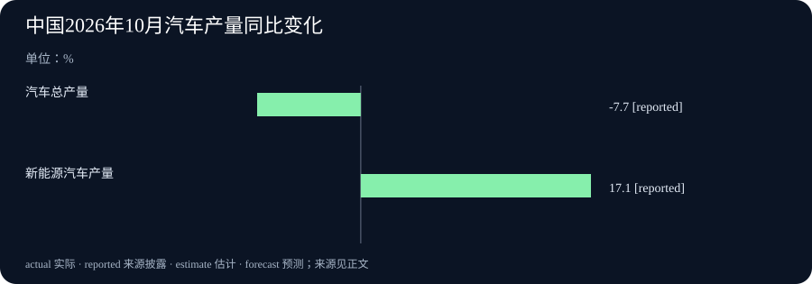

Daily Intelligence · 2026-11-17
信息边界 研究截止于北京时间 2026 年 11 月 17 日 07:01:19，优先追踪此前 24 小时公开的一手材料。日本内阁府、中国国家统计局和小马智行的发布时间均落在窗口内。阿里云公告标注 11 月 16 日，首发小时与时区未披露，按原页日期采用。
Today's Thesis
阿里把通义千问新旗舰接入了更多工具，小马智行和丰田把一款无人驾驶出租车开进了广州的日常服务。两项进展都给出了可以验证的下一步。软件采购方可以测试一件工作做完要花多少钱，广州乘客可以实际查到哪里能约车。同期中日数据提醒我们，某项技术或投资走快时，家庭支出和整个行业的产量仍可能走出不同方向。
Executive Summary
阿里 11 月 16 日正式发布 Qwen4-Max。相比本刊 11 月 12 日已报道的预览，新增的是正式版本的使用入口。个人可以在部分千问应用使用，开发者也可以通过阿里云的模型接口把它接入自己的程序。阿里公布了自测成本，但不同用户的用量和重做次数会改变账单。 阿里云公告
小马智行和丰田宣布由双方共同开发的第七代纯电出租车在广州投入全无人商业运营。公告给出了乘客可用的叫车渠道。未来约一千辆的目标覆盖多个城市，广州是这份公告已确认开始服务的城市。 小马智行公告
中国 10 月规模以上工业增加值扣除价格因素后同比增长 4.8%，社会消费品零售总额按金额增长 0.4%。日本三季度扣除价格因素后的国内生产总值较二季度微降，民间非住宅投资较上季增长 1.6%，民间消费下降 0.3%。两个国家的指标时期和算法不同，可分别用来观察当地生产、投资和消费的差异。 中国国家统计局 日本内阁府初值
AI Daily
千问正式版给开发者增加接入入口
阿里云在 11 月 16 日的公告中把 Qwen4-Max 列入千问云用量订阅和模型接口，并宣布它也可在 QwenWork、QwenStudio 使用。模型接口让别的软件可以直接向模型发送任务和接收结果。例如，企业自己的报价工具可以先读取说明书和照片，再把待确认的产品字段交给人工复核。此前本刊已记录 Qwen4-Max-Preview 上线。此次值得重看的变化是正式版开放了哪些接入方式。 阿里云公告
新模型可直接处理图像。公告称它一次最多可接收约 100 万个词元。词元是软件切分文字等输入后使用的计量单位。这个数字说明一次任务能带进多少材料，实际能否从长文或图片中找对证据，仍要用真实材料检验。在阿里的 Work360 自测中，公司称相较于 Qwen3.8-Max，高推理设置下模型少用 35% 的词元，平均每项任务的成本低约 60%。这两个数字适用于公告里的测试，采购人还需要核对自己使用的价格、通过标准和失败后重做的成本。 阿里云公告及测试条件
小马智行与丰田的无人出租车在广州开跑
小马智行于美国东部标准时间 11 月 16 日 05:50，即北京时间 18:50，宣布与丰田共同开发的第七代 bZ4X 无人出租车在广州开始全无人商业运营。车内无需驾驶员。公司称乘客可用 PonyPilot 应用、微信或支付宝小程序全天叫车。实际可用性仍取决于乘车地点是否在服务范围和当时有没有车。车型名称也关系到报道范围。bZ4X 是该公司第七代车队的三种车型之一，这次宣布的是其中一种车型在广州的进展。 小马智行公告
公告回顾了 2 月首辆量产车下线，也列出了其他城市的测试和运营准备。约一千辆是跨城市投入的计划规模。现在能单独验证的是广州的叫车入口与这款车正式投入服务。要看运营能否持续扩大，还需知道实际出车数、普通和繁忙时段的等车时间，以及公司怎样处理车辆遇到复杂路况后的停靠和后续服务。公告没有给出这些运营数据。 小马智行公告
Business Daily
中国 10 月工厂产出和商品零售表现不同
国家统计局于 11 月 16 日 10:00 发布 10 月数据。规模以上工业企业的增加值，就是扣除外购原料等投入后由工业活动创造的价值，扣除价格因素后比去年同月增加 4.8%。装备制造业增加值同比增加 10.6%，高技术制造业增加 17.6%。同月社会消费品零售总额按金额同比增加 0.4%，其中商品零售增加 0.3%，餐饮收入增加 0.7%。零售数字没有按工业增加值的方式扣除价格。 国家统计局月度发布
这些数字能帮助企业分开问两件事。供应商这段时间生产了多少，客户这段时间又愿意花多少钱。某些工厂货量增加，也可能对应企业采购、海外订单或库存变化。仅凭这组数字无法确定货物最后由谁买走。对于卖车或为车企供货的企业，本月汽车产量与其中的新能源汽车产量走势相反，值得进一步对照车型、交付地区和库存。 国家统计局工业产品详表
Macro Observation
日本三季度总量微降，企业投资与民间消费分化
日本内阁府于当地时间 11 月 16 日 08:50，即北京时间 07:50，发布 7 至 9 月国内生产总值初值。国内生产总值（GDP）衡量一段时间内经济活动创造的价值。扣除价格和季节因素后，日本三季度较上季微降。官方表保留一位小数显示为 −0.0%，按单季速度折算为一年是 −0.1%。折算用于比较速度，不能当成全年预测。二季度较一季度增长 0.4%。 日本内阁府初值 内阁府公布日程
同一张表显示，民间消费较上季下降 0.3%，民间非住宅投资增长 1.6%。后者包括企业用于生产经营的设备和设施等投入，覆盖多个行业。两项数据提供了比总量更具体的线索。企业可能继续增添设施，同时居民消费走弱。相关初值还会随新资料修订，内阁府排定 12 月 8 日发布第二次估算。届时应先看哪些分项被调整，再看总量方向有没有变。 日本内阁府初值 内阁府公布日程
Signal Dashboard
| 观察对象 | 已确认的变化 | 下一份可比较的证据 |
|---|---|---|
| 千问新旗舰 | 正式版增加模型接口等使用入口 | 在相同材料、相同通过标准下完成一件工作的总成本 |
| 广州无人出租车 | 第七代 bZ4X 开始在广州提供车内无驾驶员的商业服务 | 可约范围、实际出车数和不同时间段的等待情况 |
| 中国 10 月产销 | 工业增加值实际同比增长 4.8%，社会消费品零售额按金额增长 0.4% | 产量、库存和向终端交付分别怎样变化 |
| 日本三季度初值 | 民间非住宅投资较上季增长 1.6%，民间消费下降 0.3% | 第二次估算对投资和消费的修订幅度 |
Deep Insight
用实际完成的一次服务衡量进展
昨天的日报关注人工智能助手取得更多工具后，怎样限制它读到的资料和能做的操作。今天的千问与无人出租车提供了另一个角度。一项能力从预览、试验走到可接入或可叫车之后，谁来承担它在现实环境里出错的成本？在软件里，这个成本可能是工作人员再核对一遍材料。在无人驾驶服务里，乘客的成本可能是多等一会儿或改用别的交通方式。对服务方来说，适合追踪的数字应尽可能接近用户实际得到的结果。
以千问为例，阿里自测给出了每项任务平均成本的变化。一个采购团队可以从自己的材料挑出十份带图片、附表和例外条款的文件，先写下什么才算答对，再用新旧两个版本分别跑一次。材料的长度、答案的通过条件和价格口径应固定下来。如果其中一版经常漏掉例外条款，就把重跑和人工查错的时间算进账单。这样能判断模型价格之外，整项工作的花费怎么变。这个做法也能帮助团队发现哪些材料根本没必要全交给模型，从输入端减少用量。
对广州的乘客来说，叫车软件给出了可以反复核对的入口。若今后公布跨城市投车数量，它当然可以说明车辆供给扩大。判断服务是否改善，还要同时记下每个城市的覆盖范围和等待时间。例如，新增车辆如果集中到已有的高需求区域，那里可能更容易叫到车。新区域的乘客是否也受益则要查看当地覆盖。这个比较要求披露运营地点、服务时段和实际完成的行程。把车辆目标除以城市数，无法得出任何一个区每天有多少车可叫。
宏观数字的用途不同。中国汽车产量把多个用途、车企和地区合在一起。新能源汽车是其中一部分，后者增长可以与总体下降同时发生。它能帮助读者理解产品结构，却无法回答广州一支出租车队扩到哪一步。日本统计里，企业投资与民间消费也可以朝不同方向走。一家企业决定购买机器，取决于现有订单、工厂改造和预期需求。家庭增加开支要看工资、物价等条件。看到同季度两组数字，只能确认它们已经分化。理解原因还要看这些条件后来有哪些得到数据支持。
由此可以为四条新闻各保留一条简单的验证标准。模型看达到同一质量所需的完整成本，出租车看有多少人能在需要时实际完成一程，中国汽车看不同车型能否由出厂走到交付，日本经济看后续分项能否解释总量。用户对这些服务和商品面临的都是具体选择。把证据放回选择发生的位置，数据的大小才容易读懂。
Tomorrow Watch
未来一两天观察阿里云接口文档和价格页。需要确认同样一份资料在不同使用方式下如何收费，尤其是重用已有输入时允许省掉哪部分费用。广州这边可用叫车渠道查看新车型的服务提示。若公司发布运营数据，宜先找可用区域和实际完成的行程，然后再解释车队规模。
追踪中国车市时，把 10 月产量当成生产端的起点，再找同月同类车型的出厂、出口和交付资料。日本方面把 12 月 8 日的第二次估算加入日历。读正式更新时，重点核对民间消费和非住宅投资两项，保留本次公布的初值作为比较。 国家统计局工业产品详表 日本内阁府公布日程
One Chart

图里的百分比比较 2026 年 10 月与上年同月，取自国家统计局规模以上工业产品统计。汽车总产量为 304.5 万辆，同比下降 7.7%。其中新能源汽车为 202.7 万辆，同比增加 17.1%。两个增速各有自己的上年基数，新能源汽车已经计入总产量，不能把两根柱相加。图里的 reported 指统计局披露的实际生产数字。这组数字衡量工厂生产的车辆，销量和登记上牌需要看各自的统计。 国家统计局工业产品详表
Quote of the Day
Have nothing in your houses that you do not know to be useful or believe to be beautiful.
家里只放你确定有用，或相信是美的东西。
William Morris（威廉·莫里斯）在《生活之美》（The Beauty of Life）中谈普通家庭的陈设。这场演讲于 1880 年 2 月 19 日在伯明翰举行。上引文字出自后来印行的演讲文本。在这段话前后，他从普通房间写起，讨论居住者每天看见和使用的东西。 演讲印本原文 爱荷华大学演讲档案
编辑解读 莫里斯给日常选择留下两个理由。有些物品值得留下，因为经得起每天使用。有些物品值得留下，因为住在这里的人在意它的样子。清理房间时，这条判断也给后者留出了位置。
Action Items
- 模型做完一件事花多少？ 选一组真实且已获准使用的材料，定好通过条件，再对照新旧版本的账单、返工和人工复核时间。
- 我的起点和终点都能叫到无人车吗？ 查看广州服务提示，记下自己要走的线路和时段，再核对应用给出的可上车地点。
- 哪些车型贡献了产量变化？ 把汽车总量和其中的新能源汽车分别对照各自的去年同期，接着找同口径的终端交付数据。
- 日本初值中哪组数字值得复看？ 保存三季度民间消费和非住宅投资的数据，在 12 月 8 日的第二次估算中核对修订方向。
- 这条数字对应哪个阶段？ 阅读下一份技术公告时，标清它讲的是测试结果、已经开放的服务还是计划，分别找可重复核实的证据。